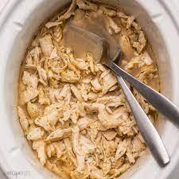

Crockpot Pulled Chicken

Description
A beginner recipe for delicious crockpot pulled chicken! Cooked in a mixture of 7-UP and brown sugar,
this simple meal is sure to satisfy with it's sweetened rich flavor.
Perfect for potlucks, family gatherings, or leftovers for the week!
Ingredients
- 1 lb. pkg. chicken tenders
- 1 cup 7-Up or Sprite
- 1 cup brown sugar
- hamburger buns
- Sweet Baby Ray's Honey BBQ Sauce
Steps
- Mix Sprite (or 7-Up) and brown sugar in crockpot
- Place chicken tenders in crockpot
- Cook on high for 4 hours
- Remove chicken from crockpot and shred
- Put shredded chicken on bun and top with heated BBQ sauce